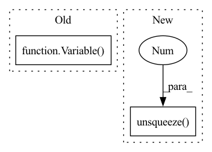

Pattern ID :17835
Before Change
rnn_output, context_alignment = None, None
for t in range(T):
if t == 0:
embedding = self.decoder_embeddings(Variable(
self_attended_context[-1].data.new(B).long().fill_(
self.field.vocab.stoi["<init>"]), volatile=True) .unsqueeze(1), [1]*B)
else:
embedding = self.decoder_embeddings(outs[:, t - 1].unsqueeze(1), [1]*B)
hiddens[0][:, t] = hiddens[0][:, t] + (math.sqrt(self.self_attentive_decoder.d_model) * embedding).squeeze(1)After Change
if t == 0:
with torch.no_grad():
outs_0 = Variable(self_attended_context[-1].data.new(B).long().fill_(self.field.vocab.stoi["<init>"]))
embedding = self.decoder_embeddings(outs_0.unsqueeze(1 ) , [1]*B)
else:
embedding = self.decoder_embeddings(outs[:, t - 1].unsqueeze(1), [1]*B)
hiddens[0][:, t] = hiddens[0][:, t] + (math.sqrt(self.self_attentive_decoder.d_model) * embedding).squeeze(1)In pattern: SUPERPATTERN
Frequency: 3
Non-data size: 2
Instances Fragment ID: 58563637
Project Name: stanford-oval/genienlp
Commit Name: 9f19cfb09b47ff69b458788a00383ac6d3b071e1
Time: 2018-08-13
Author: mehrad@stanford.edu
File Name: models/coattentive_pointer_generator.py
M Class Name: CoattentivePointerGenerator
N Class Name: CoattentivePointerGenerator
M Method Name: greedy(6)
N Method Name: greedy(6)
M Parent Class: nn.Module
N Parent Class: nn.Module
M File Name: models/coattentive_pointer_generator.py
N File Name: models/coattentive_pointer_generator.py
M Start Line: 145
M End Line: 178
N Start Line: 143
N End Line: 180
Before Change
y = dist_an.data.new()
y.resize_as_(dist_an.data)
y.fill_(1)
y = Variable( y)
loss = self.ranking_loss(dist_an, dist_ap, y)
return loss
class CenterLoss(nn.Module):After Change
mask = targets.expand(n, n).eq(targets.expand(n, n).t())
dist_ap, dist_an = [], []
for i in range(n):
dist_ap.append(dist[i][mask[i]].max().unsqueeze(0 ) )
dist_an.append(dist[i][mask[i] == 0].min().unsqueeze(0))
dist_ap = torch.cat(dist_ap)
dist_an = torch.cat(dist_an) Fragment ID: 58563636
Project Name: vlsomers/bpbreid
Commit Name: cd80a074396caa42b81068115c9b066f4ce08414
Time: 2018-04-26
Author: k.zhou@qmul.ac.uk
File Name: losses.py
M Class Name: TripletLoss
N Class Name: TripletLoss
M Method Name: forward(3)
N Method Name: forward(3)
M Parent Class: nn.Module
N Parent Class: nn.Module
M File Name: losses.py
N File Name: losses.py
M Start Line: 79
M End Line: 87
N Start Line: 78
N End Line: 83
Before Change
rnn_output, context_alignment = None, None
for t in range(T):
if t == 0:
embedding = self.decoder_embeddings(Variable(
context[-1].data.new(B).long().fill_(
self.field.vocab.stoi["<init>"]), volatile=True) .unsqueeze(1), [1]*B)
else:
embedding = self.decoder_embeddings(outs[:, t - 1].unsqueeze(1), [1]*B)
decoder_outputs = self.dual_ptr_rnn_decoder(embedding, //hiddens[-1][:, t].unsqueeze(1),After Change
if t == 0:
with torch.no_grad():
outs_0 = Variable(context[-1].data.new(B).long().fill_(self.field.vocab.stoi["<init>"]))
embedding = self.decoder_embeddings(outs_0.unsqueeze(1 ) , [1]*B)
else:
embedding = self.decoder_embeddings(outs[:, t - 1].unsqueeze(1), [1]*B)
decoder_outputs = self.dual_ptr_rnn_decoder(embedding, //hiddens[-1][:, t].unsqueeze(1), Fragment ID: 58563638
Project Name: stanford-oval/genienlp
Commit Name: 9f19cfb09b47ff69b458788a00383ac6d3b071e1
Time: 2018-08-13
Author: mehrad@stanford.edu
File Name: models/pointer_generator.py
M Class Name: PointerGenerator
N Class Name: PointerGenerator
M Method Name: greedy(5)
N Method Name: greedy(5)
M Parent Class: nn.Module
N Parent Class: nn.Module
M File Name: models/pointer_generator.py
N File Name: models/pointer_generator.py
M Start Line: 118
M End Line: 142
N Start Line: 114
N End Line: 141